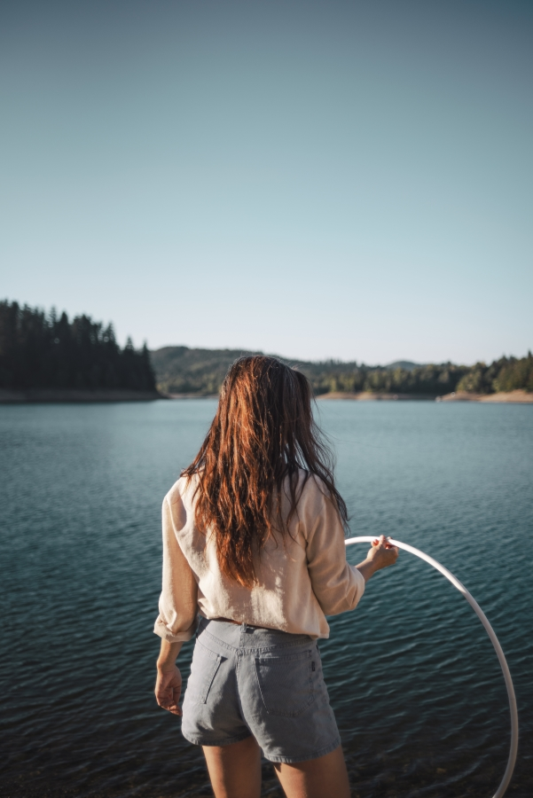

<!-- Before you change anything make sure you have s copy of the original website
before you change stuff. Make a copy of the project and then experiment with
changing stuff :)  -->


<!-- This  is a gallery with 3 horisontal photos and 3 vertical photos.
You can copy paste this and put it where you want in the gallery htmls 
to expand the galleries.
(Couple.html, events.html, familytime.html. portraiture.html, wedding.html) -->

<!-- The first picture is horisontal, followed by two vertical ones then two horizontal and then the
last is vertical. Change the src=

horisontal
vertical
vertical
horisontal
horisontal
vertical
 -->


<div class="row gallery">
    <div class="col-lg-4 col-md-12 mb-4 mb-lg-0">
      
  
      
    </div>
  
    <div class="col-lg-4 mb-4 mb-lg-0">
      
  
      
    </div>
  
    <div class="col-lg-4 mb-4 mb-lg-0">
      
  
      
    </div>
  </div>


  <!-- To add new photos to the project simply put them inside the picture folders where you want them. 
  You should optimize them for faster loading times on the web page. Optimise on the internet or 
  use a photo editor program  :)  -->


<!-- If you want to change the top picture of the gallery. Go to styles.css and look for the corresponding

.contact {
    background-image: 
    url( images/Prints/Optimized-pinnekjott.jpg);
    }

This is the top picture for the contacts page, change the URL to the new picture you want :)  
do the same for whatever page you want to change the picture -->


<!-- If you want to change the text on the web page you go to the file where you want to change.
For example if you want to change the text on the front page, go to index.html file and look 
for the text you want to change. Then simple write as you would do in Word or on facebook
but do not delete the tags. They look like this <SomethingInside> </SomethingInside> These are 
important for the look of the web page  -->